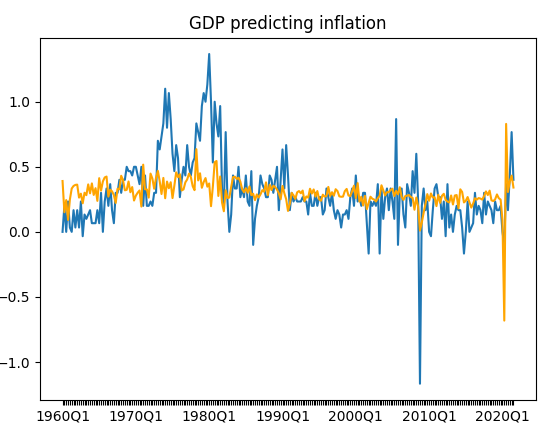
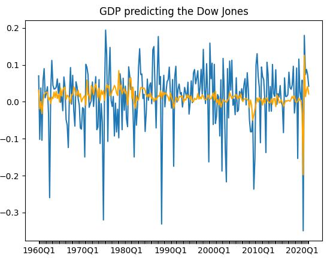
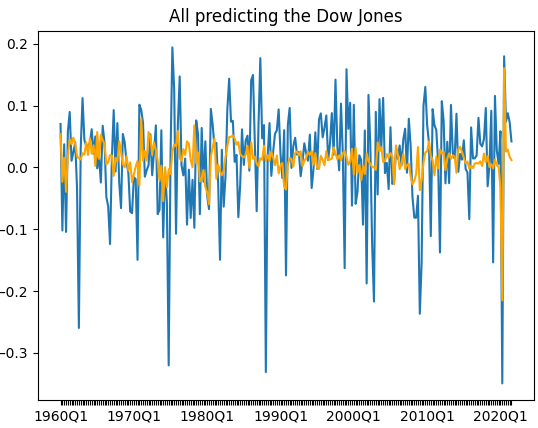

I am currently working on creating models to show the correlation between different key economic health indicators.
The following graph shows a model of % changes of GDP predicting % changes of inflation since 1960.

As you can tell from the graph above, inflation and gdp have a pretty clear relationship (as nominal GDP is just unadjusted for inflation real GDP). This cannot be said for the Dow Jones and GDP.

If we add in a variety of other variables including: unemployment, consumer confidence, and inflation we see a slightly greater correlation.
Most of the movement is still drawn from GDP showing that there is very little effect of these variables in explaining variation of the DJIA.

Pygame Physics Engine
A simple 2D physics engine that uses the library pygame to draw polygons at a series of points. Gravity is represented
accurately and objects lose momentum with bounces.
Rotations are based on a middle representation of the shape then translated when drawn. The speed at which the box flies at is directly
related to the movement of the mouse. This is done by averaging the direction and speed of the most recent mouse movements.
21st jan, 2022 (last updated)
Today
I'm currently working on a couple of data projects while searching for an internship. When not working
I love to engage in PC building, board games, and volunteer work.
june-aug, 2021
Federal Reserve Board
During the summer, I worked to write Python programs used for statistical analysis of
financial reports. My largest contribution is a program currently in use that finds outliers in data collections
using the jacknife statistical approach.
2020-present
University of Maryland
I currently study Information Systems within the Robert H. Smith school of business.
I am a part of the QUEST honors consulting group and a guide in the Business Society and Economy
scholars program.
2016-2020
Walter Johnson HS
Volunteering has been an integral part of my life since highschool where I started volunteering
at a variety of local non profits. I received the county certificate of meritorious service for having
over 260 hours of volunteer experience.